Moonshine is a free and open source middleweight IDE built with ActionScript 3 for AS3,
Apache Flex®, Apache Royale® and Feathers development with Cloud and Desktop support.
Works with feature parity on the cloud model
The first IDE developed to provide cloud support for AS3,
Apache Flex®, Apache Royale® and Feathers. Now you can create your projects on the cloud and utilize the agility of a cloud based platform using Moonshine IDE ™.
100% Cross Platform
Moonshine is a cross platform open source application.
With Moonshine you will find the luxury of developing anywhere on any platform.
Built specifically to focus on Apache Flex® and
Apache Royale®
The Apache Royale® project is a continuation of the previous effort called FlexJS to produce a next-generation of the
Apache Flex® SDK that enables developers to use MXML and ActionScript to generate HTML/JS/CSS applications which can run natively in browsers. The cross-compiled code can also be used in Apache Cordova® (Adobe PhoneGap) mobile applications.

Subversion support
We are providing SILKSVN for subversion support because they provide a standalone command-line Subversion client
for Windows. The installer contains all command line tools
(svn, svnadmin, svnsync, svnserve, svnmucc) without application bindings or Apache modules.
Moonshine 2.2.0
This release was focused on adding Git support in the Manage Repositories interface from 2.1.0. You may now clone and track Git repositories in this interface. To help new users get started, we have added a few example repositories to the interface by default. This includes the Moonshine source and some examples for Apache Royale.
We also made some changes to make it faster to clone complicated projects. Moonshine will now automatically detect subprojects within a repository, and prompt the user to decide which projects to open. In addition, we added a feature to allow repositories to define links to other repositories with moonshine-dependencies.xml. For example, Moonshine-IDE provides links to all of its external dependencies, so that you can clone all required projects without leaving Moonshine or reviewing a README file. This file may be added to other repositories using the format defined here.
Moonshine 2.2.0 Desktop Feature Additions
- Added support to define related repositories for an SVN or Git repository, using moonshine-dependencies.xml. See the documentation here.
- If a cloned or checked out repository contains multiple subprojects (like https://github.com/prominic/Moonshine-IDE.git), Moonshine will allow the user to automatically open the subprojects (up to 3 levels deep)
- Added Apache Royale Jewel project template. This requires a nightly build (0.9.6) of Apache Royale.
What to expect in upcoming releases
- Improvement to Java projects.
- Improvement integration with as3mxml language server build system.
Moonshine Open Source
Moonshine is Open Source and accessible to everyone. We welcome you to download the code from the list of distributions in the Downloads section. For documentation and instructions,
please refer to the link below:
Archived Versions
Moonshine is being developed using:
Documentation
Complete documentation to help you moving forward and play with Moonshine.
- Set Apache Flex®, Apache Royale® or Feathers SDK in Moonshine
- Start Moonshine
- In Moonshine go to File -> Settings -> Default SDK
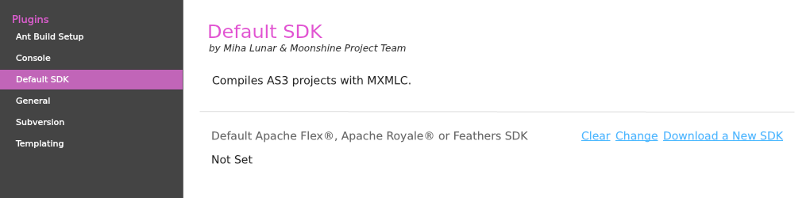
- If you are using Moonshine that bundled with different SDKs, then you can use any of them to set default Apache Flex® SDK to Moonshine, or even you can download Apache Flex® SDK with AIR SDK at http://flex.apache.org/installer.html
- If you are using OSX El Capitan or higher, make sure your any downloaded SDK’s location is ~/Downloads folder. By many restrictions applied to El Capitan, a sandbox app can execute/use SDK stuff only if it is in user’s Downloads folder
- (OSX) If you have setup Apache Flex® SDKs downloaded by Moonshine’s helper application App Store Helper then you should probably see Moonshine’s default SDK already set by a bundled SDK
- You can also set your own SDK as default, click on Change link inside Default Flex SDK section, this will open a popup named Select Flex SDK consisting of available/added SDK entries
- To use any SDK from the above entry, simply double-click on it, and it’ll updated to Default Apache Flex® Apache Royale® or Feathers SDK section, or you can add your own by clicking on plus button in Select SDK popup and complete the Define a SDK Path form to add your new SDK to Moonshine
- When done, click on Save button in Default SDK section
You can also set SDK to individual project as shown below:
- Right click on your project name and select Settings then at the left Build options
- Click on Change link inside the Custom SDK section, this will open a file browse dialogue
- Locate the Apache Flex®, Apache Royale® or Feathers SDK folder (as previously downloaded) and choose Select Folder
- You should see Custom SDK is now pointing to Apache Flex®, Apache Royale® or Feathers SDK directory you chose
- Click Save
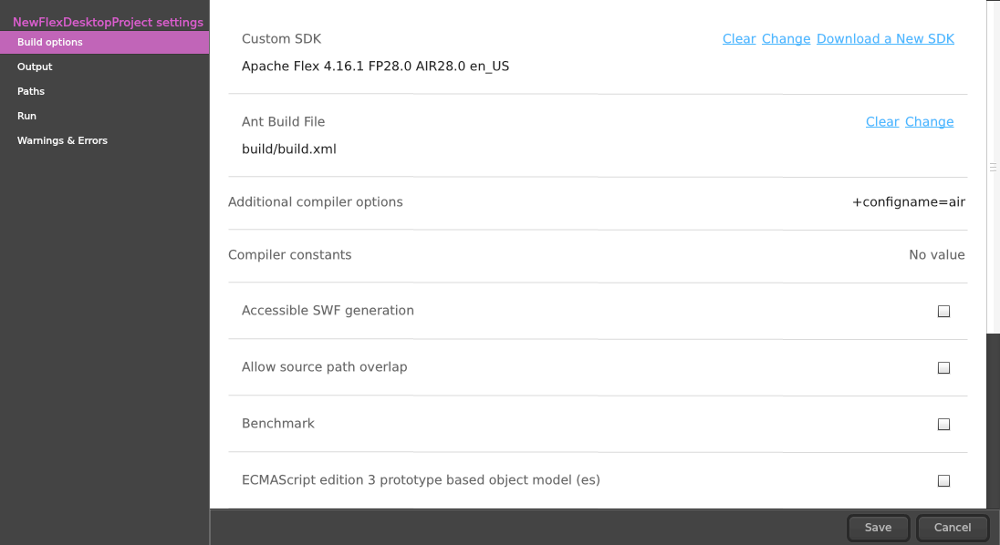
- Create and build projects in Moonshine
- To create a new desktop based Apache Flex® project do one the following:
- In Moonshine choose File -> New -> Flex Desktop Project (MacOS, Windows) : MXML and ActionScript support
- In Moonshine choose File -> New -> ActionScript Project (SWF, Desktop) : Choose this if you want pure ActionScript project
- In Moonshine choose File -> New -> Feathers Desktop Project (MacOS, Windows) : MXML and ActionScript support
- Choose ActionScript Project (SWF, Desktop) in Moonshine splash screen
- Choose Flex Desktop Project (MacOS, Windows) in Moonshine splash screen
- Choose Feathers Desktop Project (MacOS, Windows) in Moonshine splash screen
- Choosing any above option will open the New Project tab:
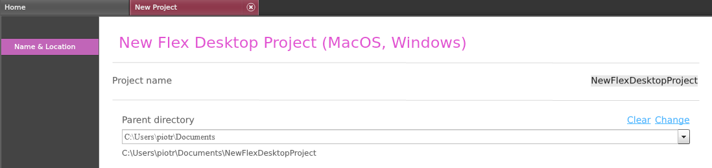
In ActionScript Project (SWF, Desktop) options you’ll find an extra option to choose between Desktop or Web as the platform type:
- Editable fields are:
- Project Name
- Parent Directory
- Select Project Type (ActionScript Project only)
- After entering the necessary fields above, click Create to generate a new project
- Create option immediately create a new Apache Flex® project, open the project in Moonshine workspace (left-hand tree menu) and it’s application file in Moonshine editor
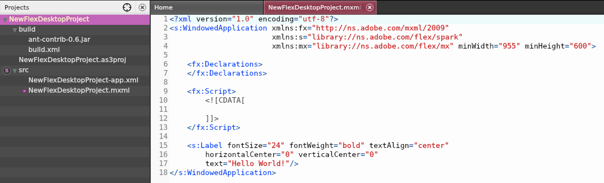
- Moonshine generates any project with it’s supported types with demo ‘Hello World!‘ text, so you can immediately build the project and check it’s output; an optional Apache Ant® build script fully configured so you build a desktop package immediately as well!
- To run the project choose Project -> Build & Run or press CTRL+ENTER (WIN)
or CMD+ENTER (Mac OS). You can see command line output in Moonshine’s console window (at the bottom of the interface)
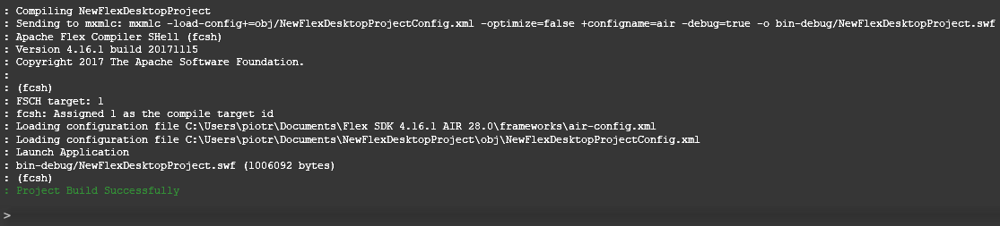
If your project compiles, an AIR window will open running your code.
- To create a new web based Apache Flex® project do either one the following things:
- In Moonshine choose File -> New -> Flex Browser Project (SWF) : MXML and ActionScript support
- In Moonshine choose File -> New -> ActionScript Project (SWF, Desktop) : Choose this if you want pure ActionScript project
- Choose ActionScript Project (SWF, Desktop) in Moonshine splash screen
- Choose Flex Browser Project (SWF) in Moonshine splash screen
- Choosing any above option will open new project creation dialogue:
In ActionScript Project (SWF, Desktop) options you’ll find an extra option to choose between Desktop and Web as output type:
- Editable fields are:
- Project Name
- Parent Directory
- Select Project Type (ActionScript Project only)
- After necessary in the fields above, click Create to generate a new Apache Flex® Web project
- Create option immediately create a new Apache Flex® project, open the project in Moonshine workspace (left-hand tree menu) and it’s application file in Moonshine editor
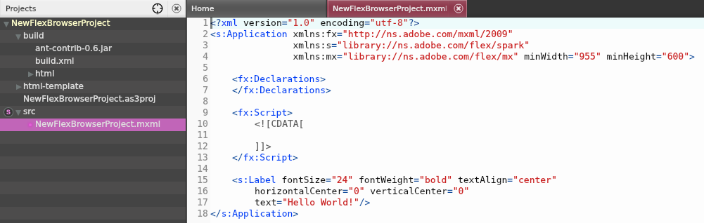
- Moonshine generates any project with it’s supported types with demo ‘Hello World!‘ text, so you can immediately build the project and check it’s output; an optional Apache Ant® build script fully configured so you build a release SWF immediately as well!
- To run the project choose Project -> Build & Run. You can see command line outputs in Moonshine’s console window (at bottom)
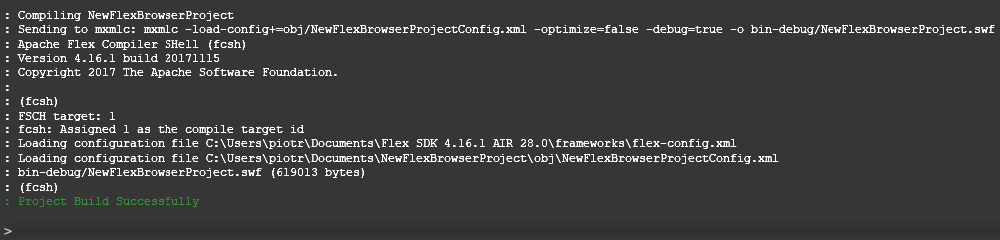
- If everything goes fine, Moonshine will generate the SWF and runs inside default browser window
- To create a new mobile based Apache Flex® project do either one the following things:
- In Moonshine choose File -> New -> Flex Mobile Project (iOS, Android) : MXML and ActionScript support
- Choose Flex Mobile Project (iOS, Android) in Moonshine splash screen
- Choosing any above option will open new project creation dialogue:
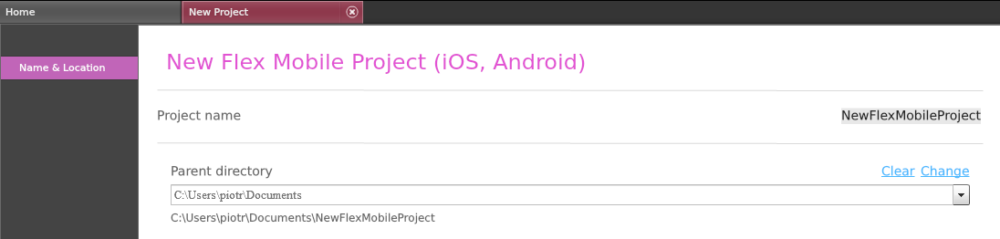
- Editable fields are:
- Project Name
- Parent Directory
- After necessary inputs in the fields above, click Create to generate a new Apache Flex® Mobile project
- Create option immediately create a new Apache Flex® project, open the project in Moonshine workspace (left-hand tree menu) and it’s application file in Moonshine editor
- Moonshine generates any project with it’s supported types with demo ‘Hello World!‘ text, so you can immediately build the project and check it’s output; an optional Apache Ant® build script fully configured so you build a mobile package (.apk or .ipa) immediately as well!
- To run the project choose Project -> Build & Run. You can see command line outputs in Moonshine’s console window (at bottom)
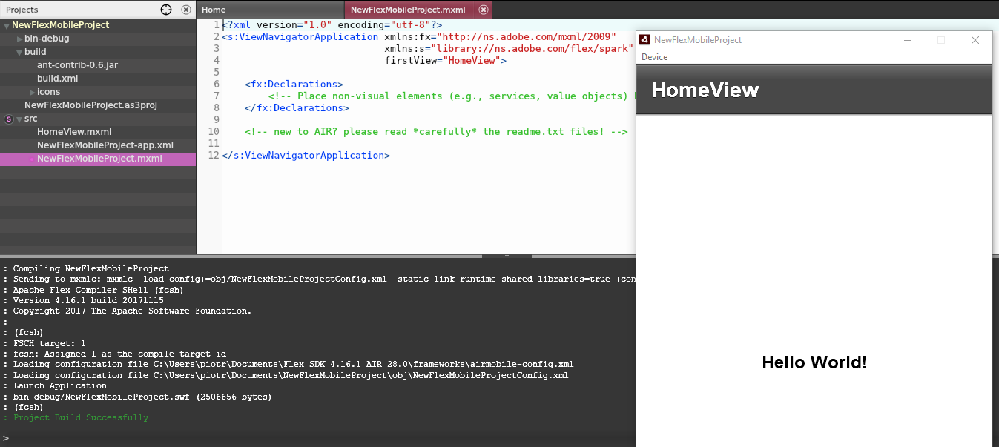
- If everything goes fine, an AIR window will open running the current project
- To create a new Apache Royale® project do either one the following things:
- In Moonshine choose File -> New -> Royale Browser Project:
MXML and ActionScript support - Choose Royale Browser Project in Moonshine splash screen
- In Moonshine choose File -> New -> Royale Browser Project:
- Choosing any above option will open new project creation dialogue:
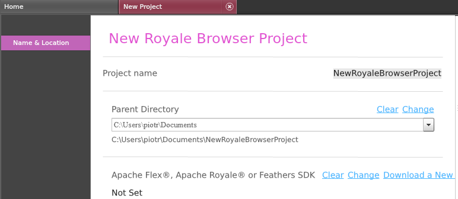
- Editable fields are:
- Project Name
- Parent Directory
- Click Create to generate a new Apache Royale® project
- Create option immediately create a new Apache Royale® project, open the project in Moonshine workspace (left-hand tree menu) and it’s application file in Moonshine editor
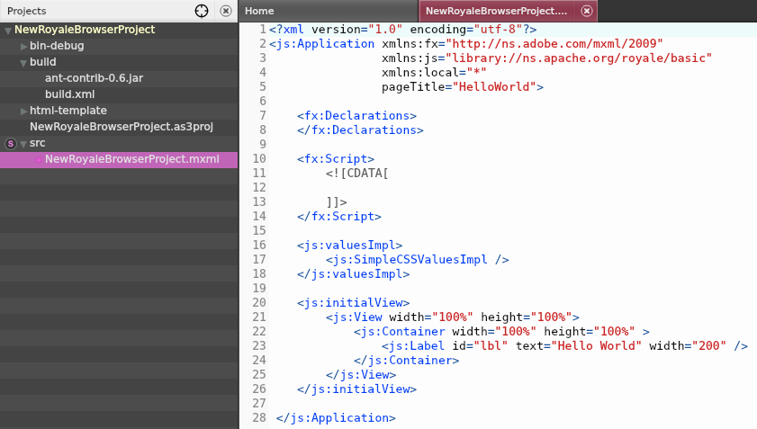
- To run the project choose Project -> Build & Run. You can see command line outputs in Moonshine’s console window (at bottom)
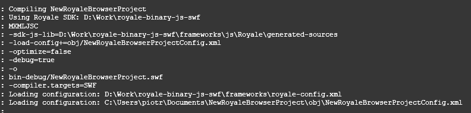
- If everything goes fine, an browser window will open running the current project
- To create Html/JS choose Project->Build & Run as JavaScript.you can see command line outputs in Moonshine’s console window (at bottom)
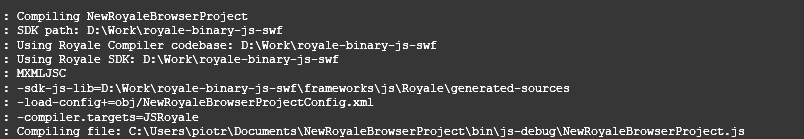
-
JavaScript files has been created in Project->bin->js-debug directory
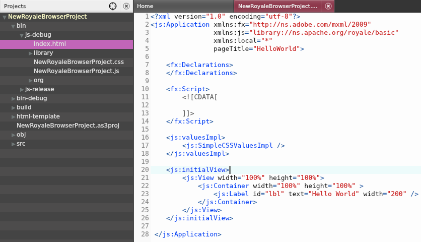
- Debug a project in Moonshine
- Open the project in Moonshine that you wants to debug
- To set breakpoint (optional), open the class file in Moonshine editor and click once at far-left numbered bar to set breakpoint to any line – line’s numbered bar will change color to mark set as breakpoint – click again to remove breakpoint:
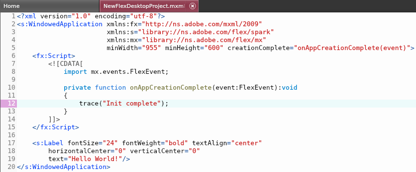
(In the image above the breakpoint is set to line# 14)
- To start a debug choose Debug -> Build & Debug from top menus. Moonshine will start a debug session, all the debug command line output can be viewable in bottom Moonshine console window, Moonshine will add a new Debug View at left panel, too. Debugger will halt where breakpoint raised and current memory items will be shown in Debug View panel:
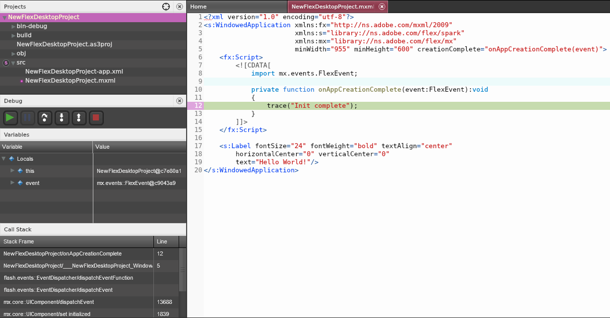
- To step over while debugging you can press F6 in keyboard or choose Debug -> Step Over
- To resume while debugging you can press F8 in keyboard or choose Debug -> Resume
- To stop/terminate debug process choose Debug -> Stop
- Apache Ant® build
- Starting an Apache Ant® build requires Ant installed in your system and setup as environment variable (ensure Ant version meets minimum requirement of 1.9.2)
- Moonshine sources supplies with it’s Ant build scripts and configured. Upon completion, the process will output desktop installer files for Windows and MacOS. You can immediately start an Ant build process if you already setup Ant in your system; to start an Ant build process we need to locate the Ant build script file (build.xml) prior to run the process.
Moonshine supplies Ant build script file in it’s project’s build folder. - Build your project by choosing Ant -> Build Apache Ant® File from top menu. In opening file browser dialogue navigate to your Apache Ant® folder. Next select Ant script and click Ant Build in order to start Apache Flex® project build. Ant build should produce .SWF and it’s HTML wrapper file set.
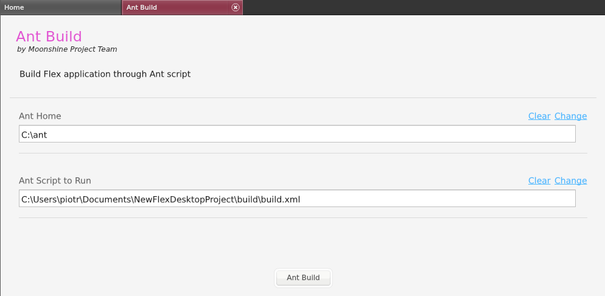
- Upon successful completion of the process, installer files can be located at DEPLOY folder inside build folder
Support the Moonshine Project
We are passionate and driven to improve Moonshine IDE ™. And are working tirelessly to improve the current working set as well as introduce new features to be made available to the Apache Flex®
Apache Royale® and Feathers community.
Moonshine is completely open source and licensed with Apache License 2.0. We would love you to join us in developing the platform to ensure its success as the best IDE option for Apache Flex®, Apache Royale®, and ActionScript 3.
Interested developers can clone or download the Moonshine source code and additionally join in an ongoing conversation regarding features and support at the LinkedIn group.
Moonshine F.A.Q.
Moonshine is a free IDE built with Apache Flex® and Adobe Air. You can create ActionScript 3, Apache Flex®, Apache Royale® and Feathers projects from Moonshine. It also provides cloud support.
Moonshine is 100% crossplatform allowing you to develop supported frameworks on either Windows or OSX.
We want to provide a free IDE to our community for ActionScript projects. An IDE which is cross platform and provides Apache Flex®, Apache Royale® , Feathers and cloud support.
Moonshine IDE ™ is built using Action Script 3 language.
Editor built with FTE. Compiling with fish & AIR2 NativeProcess (through mxmlc).
Yes, you can download source code, installers, and documentation from this website.
You can report any found issues with Moonshine on our GitHub: Moonshine-DE
Absolutely. Moonshine is an open source product and we gladly take suggestions.
Please let us know your thoughts at either the Apache Flex® users mailing list, Apache Royale® users mailing list, on the Linkedin group or GitHub issues.
It is licensed under Apache License 2.0.
There is no such forum as of today. But we will create it soon.
For now, you can ask us via Apache mailing list or the LinkedIn group created for Moonshine. We will build a separate page for your questions in the near future.